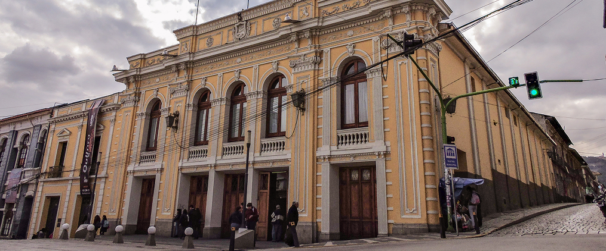

PÁNICO
MANUEL GARCÍA
Música
- Donde
- Cuando
- Como
- Cuanto
- Quienes
Lugar
Teatro Municipal Alberto Saavedra Pérez
En la calle Genaro Sanjinés, esquina de la Indaburo, a media cuadra de la plaza Murillo
- Donde
- Cuando
- Como
- Cuanto
- Quienes
Horarios
Tienes chance de ir en estos horarios
| Únicamente presentaciones en la noche | ||
|---|---|---|
| Viernes | 7 de junio | 19:30 |
| Sábado | 8 de junio | 19:30 |
| Domingo | 9 de junio | 17:00 |
- Donde
- Cuando
- Como
- Cuanto
- Quienes
Transporte
Para que no te me estreses
| Usa la línea roja del teleférico! | |
|---|---|
| Tomar de | ######## |
| Transbordo | ######## |
| Quedarse en | ######## |
- Donde
- Cuando
- Como
- Cuanto
- Quienes
Precios
Que no te duela el bolsillo, la entrada cuesta:
| Según el sitio web podríamos pagar | ||
|---|---|---|
| Entrada General | Bs. 30 | |
| Estudiantes | Bs. 20 | Y los niños pequeños entran gratis! |
| Adultos mayores | Bs. 15 | |
- Donde
- Cuando
- Como
- Cuanto
- Quienes
Restricciones de edad
No digo que no puedas...pero no te van a dejar entrar
Este evento no tiene restricciones
de edad! No tienes excusa
Despéjate un cacho,
vamos juntos!
¿Aun no te convence?
Mira todo lo que hay!

Te explico el evento!
Guía de acompañamiento
Te recomiendo...
Por esta ocasión nos tocará entrar por el frente, ¿aburrido no? pero no tenemos de otra, el resto de entradas no son para todo público. Ya que estamos: siéntate entre las filas E y G al centro, me lo vas a agradecer, la acústica para el show te dejará con la boca abierta! por lo menos yo casi lloro en otra actuación, pero que no se lo digas a nadie.
Ya que estamos aquí, sabías que…


Como muchos teatros antiguos, artistas y trabajadores cuentan historias de luces que se encienden solas, pasos detrás del telón y sonidos inexplicables…
Ya que estamos aquí, sabías que…
Algunos hasta dicen que un ex-director, el “Tío Ubico”, elige qué se presenta y qué no. Si no le gusta la obra, hay mal augurio por donde uno mire.

También siéntete feliz: estás pisando literalmente historia. Este teatro tiene más años que los dos juntos. ¿Puedes creerlo? Mi abuelo nació cuando se inauguró en 1845. Si yo hubiera sido el encargado, se caía al mes. Qué talento, señores.


Igual a este pobre lugar le cambiaron el nombre más veces que procrastinas al día. No fue hasta hace poquito en los 90’s que se le dio el nombre actual. Si lo pido muy fuerte… ¿será que le ponen el tuyo?
Según se comenta sobre la obra…


El artista Manuel García piensa que es de sus mejores álbumes. ¡Aparte por lo que dijo el último mes, parece estar realmente emocionado, literalmente dijo por sus redes...!
Según se comenta sobre la obra…
“Cantar Pánico en La Paz es un regalo que no esperaba, pero que guardaré para siempre. Esta ciudad tiene una energía única.”

La gente quedó súper prendida con Manuel García y Pánico! Comentaron mucho que es un señor buena onda, compositor de buena música y conexión total con la gente. Sus shows suelen ser muy elogiados por lo mismo, aparte que suele venir con sorpresitas que nadie espera.

Además el equipo detrás…


El staff en general estuvo muy activo durante la elaboración del show! Técnicos, sonido, luces y producción… todos coordinados para que saliera perfecto para nosotros. También comentaron...
“Fue un trabajo súper intenso, pero muy gratificante. Todo el equipo estuvo sincronizado y la energía en el escenario hizo que valiera totalmente la pena.”

Hay que reconocerles que estuvieron muy atentos a cualquier imprevisto y ayudaron con la logística para que Manuel y la banda solo se preocuparan por tocar.

Comentarios del público
“Una experiencia inolvidable, súper recomendado.” – Carla M.
“La música, la luz, la vibra... increíble.” – Jorge R.